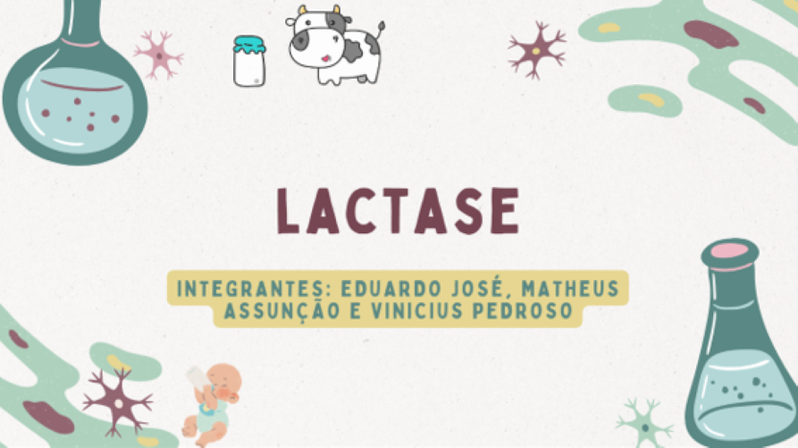
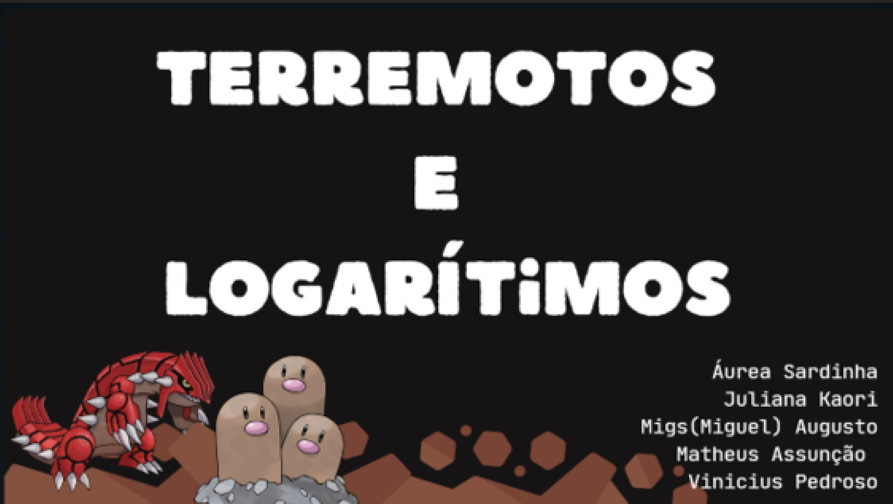
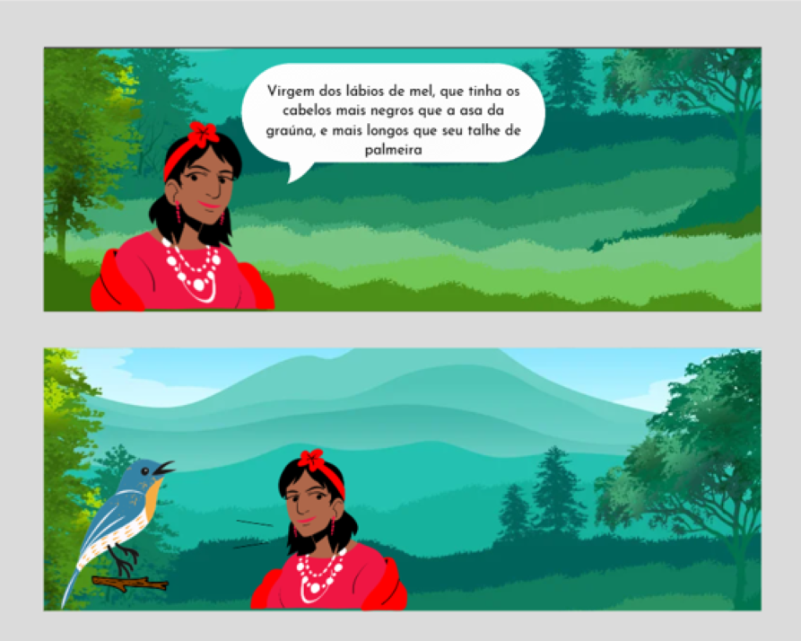

CIENCIAS
HUMANAS
Nesse trabalho falamos sobre a sétima cruzada e quem a comandou, contamos como foi ela e seu objetivo.
Nesse trabalho falamos sobre a sétima cruzada e quem a comandou, contamos como foi ela e seu objetivo.

Durante o bimestre falamos sobre enzimas, e ficamos com Lactase, explicamos como ela age no corpo humano e um pouco da sua origem!
Neste trabalho falamos sobre terremotos famosos e a sua escala, por ser um trabalho de matemática com certeza fizemos contas! Utilizamos algumas dessas magnitudes para comparar elas com Log.


Esse foi cansativo! Fizemos uma HQ baseada no livro Iracema. Cada momento do livro foi adaptado para a leitura que fizemos em sala e passado depois para uma HQ